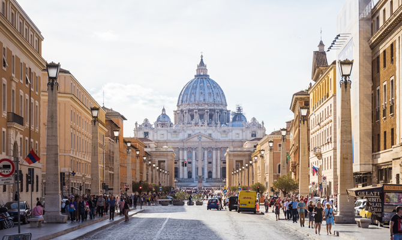
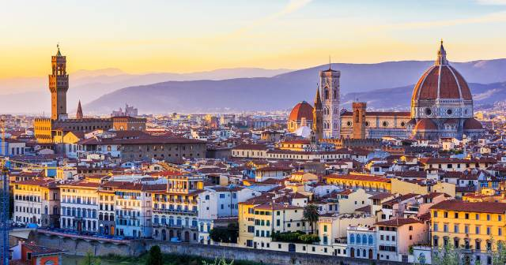
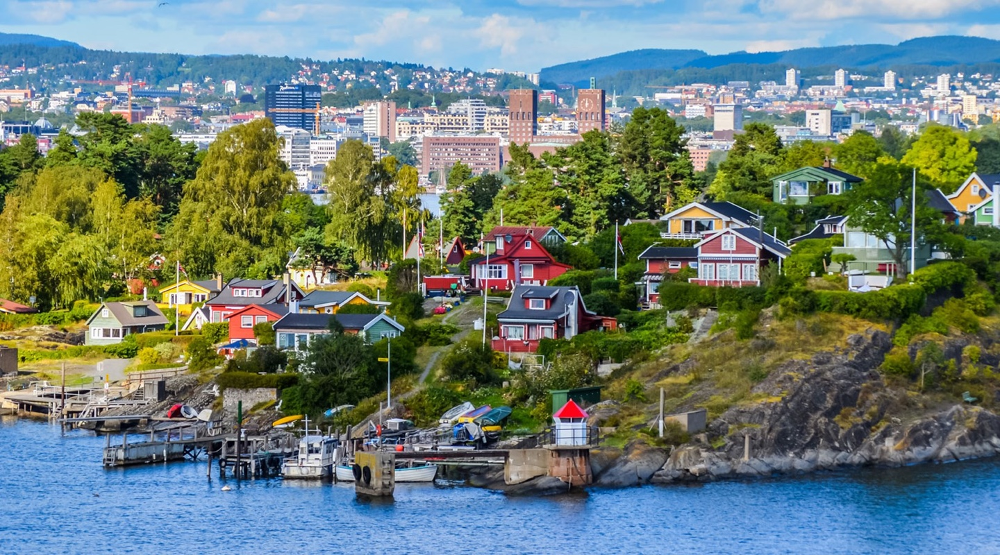
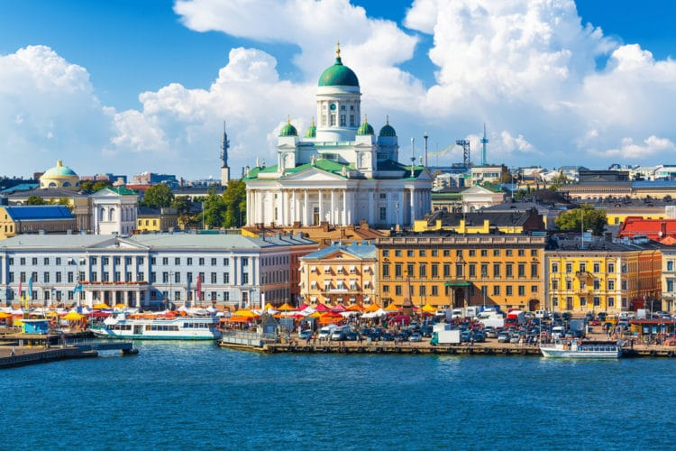
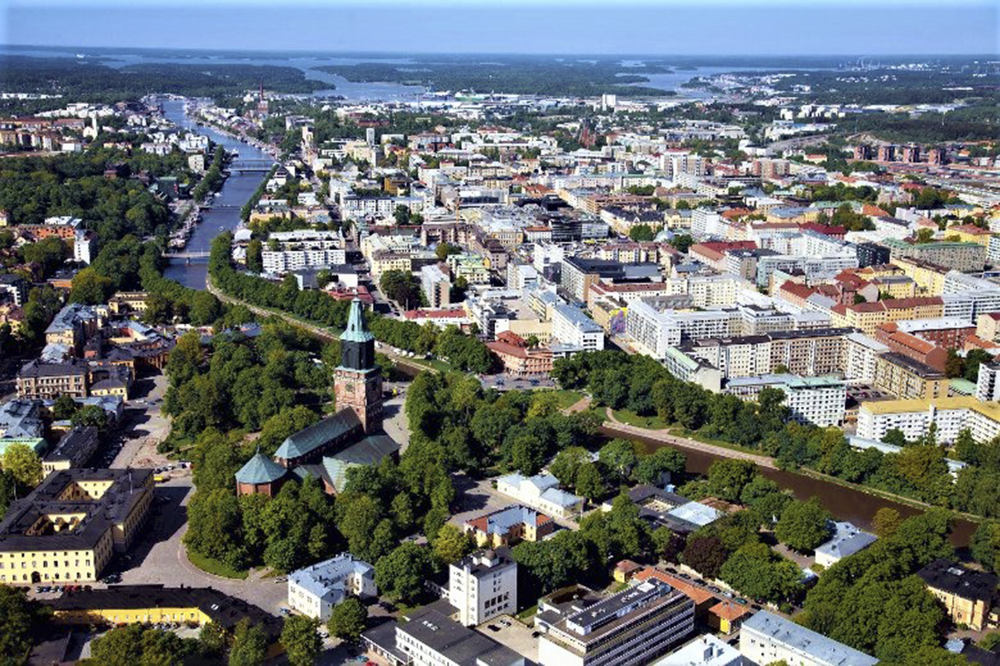

Италия
Рим

Рим — «город на семи холмах», столица Италии и региона Лацио.
Известно, что в античность Рим стали часто именовать Вечным.
Возвращаясь с древности в наше время можно увидеть, что наименование
Вечный как нельзя лучше обрисовывает город со стороны.
Расположен на легендарных семи холмах на реке Тибр, примерно в 25 км от побережья Тирренского моря.
Интересные факты
- Рим считается одним из древнейших европейских городов,
который был основан братьями Ромулом и Ремом 21 апреля в 753 г. до нашей эры.
Кстати, по истории братьев вскормила волчица, памятник которой стоит в музее Капитолия.
- Рим – единственный в мире город, на территории которого есть независимое государство,
а именно Ватикан, известный как самое маленькое
государство в мире. Сейчас, чтобы посетить его,
скапливаются невероятные очереди, которые растягиваются не насколько километров.
- Фраза «Все дороги ведут в Рим» объясняется тем, что до V века нашей эры римляне построили более
85 000 км дорог по всей империи.
- Из Древнего Рима пришел обычай поцелуя в конце церемонии бракосочетания, но ранее он имел другой
смысл – брак рассматривался как договор,
а поцелуй считался официальной печатью.
Флоренция

Флоренция – один из старейших городов Италии, расположенный в живописной долине на берегах реки Арно.
Его территория занимает площадь около 100 кв. км, где проживает свыше 360 тыс. человек. Сегодня он является столицей
региона Тоскана,
его самым густонаселенным городом и важнейшим туристическим центром, который ежегодно посещают более 20 млн. гостей.
Интересные факты
- Флоренция подарила миру выдающихся гениев, как Леонардо да Винчи, Микеланджело, Данте, Челлини, Боттичелли, Джотто, Макиавелли и Петрарка.
- Флоренция была столицей королевства Италия с 1865 по 1871 г.
- Современный итальянский язык «родился» именно во Флоренции благодаря Данте «Божественная комедия». Комедия была написана на флорентийском
диалекте вместо распространенного латинского языка, на котором писали тогда все официальные документы и художественные произведения.
- Галилео Галилей похоронен в окрестностях Флоренции. На его могиле изображено не главное его открытие – солнечная система, а система
спутников Плутона
(по приказу папы). Любопытно, что в день когда скончался Галилео Галилей (9 января 1642 г.) родился Ньютон.
Норвегия
Осло

Осло - столица и крупнейший город Норвегии, расположенный в её юго-восточной части в акватории Балтийского моря на берегу залива Осло-фьорд.
Это одна из самых
современных и экологически чистых столиц Европы с обилием интересной (в основном современной) архитектуры, музеев, ресторанов и магазинов.
Интересные факты
- Точный возраст Осло неизвестен, но первое упоминание о нём встречается в летописях, которым около тысячи лет.
- Полтысячи лет назад Осло назывался иначе — Викия. Современное название города используется с 17-го века. Другое название, которое носил этот город — Христиания.
- Около половины Осло занимают леса и парки.
- Осло неоднократно признавался лучшим для жизни городом в мире.
- Самое популярное в Осло имя — Мухаммед. Всё дело в том, что около половины жителей Осло — иммигранты.
Финляндия
Хельсинки

Столица и крупнейший город страны, Хельсинки расположен на изрезанном заливами и шхерами берегу Финского залива Балтийского моря в южной части Финляндии.
Интересные факты
- Хельсинки входит в пятерку лучших и наиболее безопасных городов мира.
- Хельсинки четыре раза захватывали русские войска.
- До середины 18 века Хельсинки был маленьким, полностью деревянным городом, где часто вспыхивали эпидемии чумы.
- До конца 19 века Хельсинки населяли преимущественно шведы. Российские власти поддерживали переселение финнов из сельской местности в столицу, а также популяризацию
финского языка, чтобы избавить эти территории от шведского влияния.
- Зоопарк Хельсинки – один из самых северных, старейших и больших зоосадов в мире. На площади в 22 гектара собраны более 2 тысяч животных и около 1000 видов растений.
Каждую зиму в зоопарке проводится международный конкурс ледовых скульптур.
- В Хельсинки есть лютеранская церковь, целиком вырубленная в скале и накрытая стеклянным куполом.
Турку

Турку – самый старый город Финляндии и её прежняя столица. Это один из наиболее крупных городов Финляндии.
Город расположен в провинции Варсинайс-Суоми и является столицей Западно-Финской губернии.
Интересные факты
- Город имеет 2 официальных названия, кроме общеизвестного «Турку», его так же называют «Або». Это шведское название.
Такие нюансы связанны с тем, что Турку официально двуязычный город.
- Город Турку связывал и продолжает связывать Россию и Швецию. До сих пор по трассе E 18, проходящей через порт,
можно доехать по суше непосредственно до Стокгольма.
- Турку являлся столицей Финляндии до 1812 года, пока российский император не решил перенести столицу в Хельсинки, поближе к России.
До сих пор Турку претендует на звание второго (а то и первого) города в Финляндии, хотя по числу жителей (170 тысяч) он всего лишь на четвертом месте.
- Турку — это родина финской Рождественской культуры. В полдень 24 декабря наступает торжественный миг праздника — провозглашение Рождественского мира.
Священные для финнов слова звучат со старой площади города Турку. Каждый год, когда часы главного городского собора пробьют 12,
звучит гимн Лютера "Айн фесте бугр", а потом с балкона дома Бринккала что на главной площади читается текст декларации
«Завтра Божьим благоволением наступит день рождения милостивого Господа и Спасителя нашего; а значит, объявляется общий Рождественский мир...»